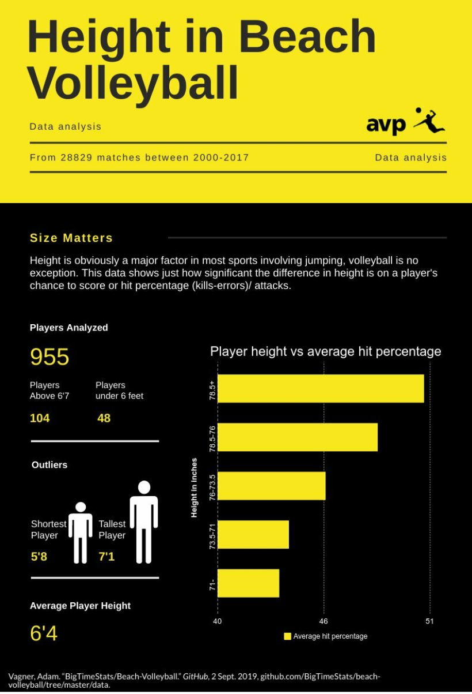

Since I don't have much to talk about in computer science right now i'm just going to have my first post be about one of my hobbies beach volleyball and I will talk about the progress I am making to improve and some thouoghts I have about how far I can go.
I have been playing beach volleyball for almost three years now and recently was lucky enough to run into a high teir coach who liked me and was willing to help me out. Despite playing for nearly three years up until now I simply used trial and error to learn to play, but now having a coach who tells me the correct and proper techniques is a massive improvement to how fast I can get better. Using some of the clips below I show some of the technical improvements I have made despite noly have known him for a short amount of time.
The two things that i have significantly improved is my hitting approach and my passing. This clip displays how I was before, when i first pass the ball to my teammate it is too far to thr right. After passing I start my approach to hit a tad bit too early but the bigger problem is that i ran more towards the middle of the net dispite the ball being set more towards the outside. All things considered i was still in a good enough position to hit the ball had I simply swung strait but i chose to swing cross and utterly failed.
This clip here is from this past weekend (2/2/20) and shows a significant difference in technique. Its very subtle but when I pass the ball i stay planted and still and do not bounce when the ball touched me. The location of the pass was also nearly perfect compared to the previous one. When approaching to hit everything is more fluid but I still did make a mistake and did not approach to where the ball actuallly was like last time. If you pay attention I take a large step right before i jump to help align meself with the ball properly and simply swung strait around the blocker who was late and tried to dive into the swing. In additon to all of these things the arm mechanics of this swing were very good, I raised my left arm and pulled my right arm back properly and then hit the ball with nearly a full extension
Although a gave a bit of criticism about the block on the prevoius clip, that guy is great. He had played in another tournament the day before and won it all and the day before that he had worked out as well as trained hard for several hours and he still got high above the net, just not as high as normal. But yea Height is a pretty big deal in beach voleyball.
Althought I am taller than a lot of people 6'0 is still small in the big picture. Espcally locally, being 6'0 is tall enough to perform well and place reasonablly well; however, if I i want to be the best I simply can not do that as the blocker people will just go around and over me. Every now and then I see a players who is not only good but massive and feel a little jelous, but there is nothing anyone can change about that you can only just work as hard as you can. For another class I had to make an infographic and I chose to display the difference in hit percentages based on height for Male players in the proffesional fivb and avp tournaments. So not only can shorter players not block well but their scoring potential is going to be statistaclly lower.
Outside of playing I still try to find ways that I can do things that will be benifcail. I try to work out lightly three times a week but it is difficult because i play nearly six days a week. There is a vertical jump bible that is out there on the internet that gives a very detailed breakdown on how to improve your jumping. It has different sections and suggested excercise plans based of your current vertical and abilitly to lift wieghts. I have found that gaining muscle is very difficult for me. I used an online calculator to estimate how much i would need to eat to gain a significant amount of a weight over a given time period and it was over 4000 calories a day which is very difficult for me to acheive consitantly as a college student who cannot cook.
Volleyball is something great that I like to enjoy while taking a break from coding.I'm nearly 21 so its unliekly I will get to change my height, but I am going to continute to try to improve more and more so that the good clips from this blog could end up being the bad clips for another. These were just some of my thoughts and feelings on some of my play and related topics to the sport that I love.